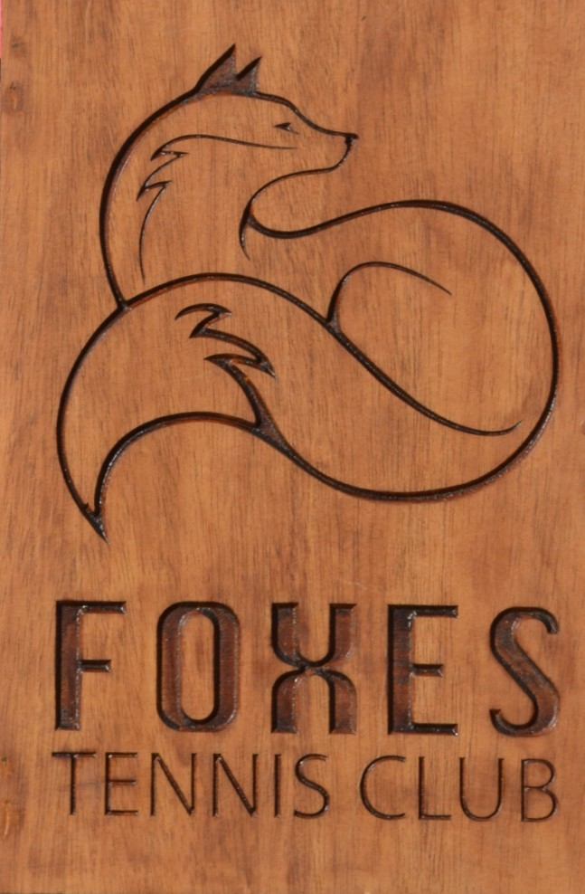
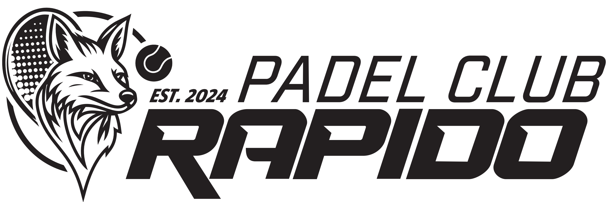
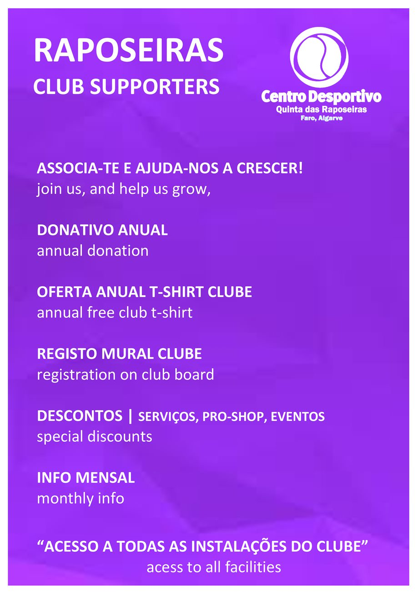
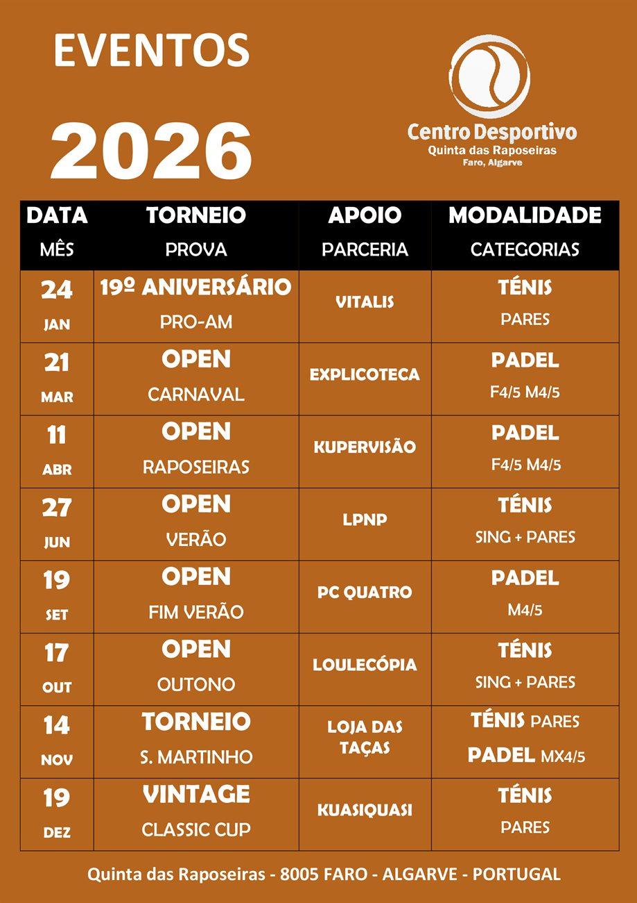
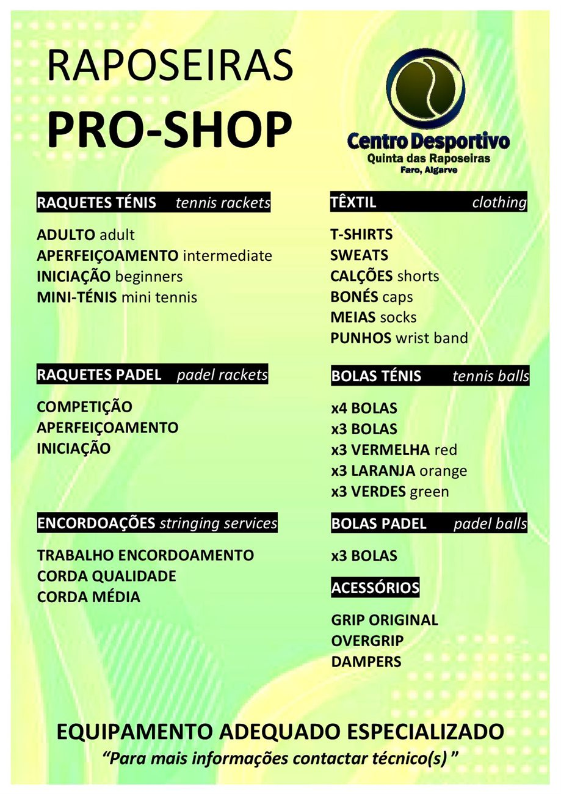
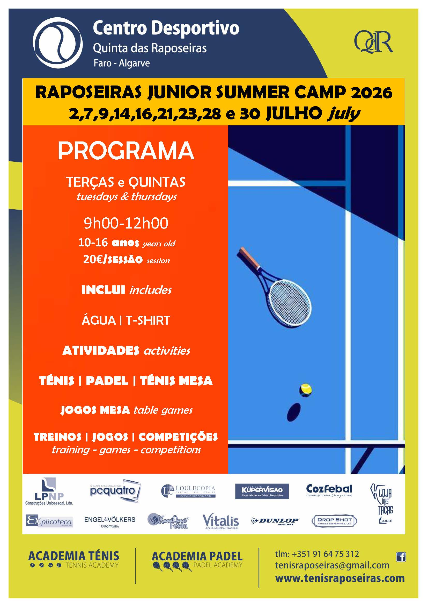

Ténis • Padel • Faro, Algarve
Centro Desportivo Quinta das Raposeiras
No topo da Quinta das Raposeiras, um espaço de natureza, convívio e prática desportiva para todas as idades.
Boas-vindas
Desporto, lazer e comunidade no alto das Raposeiras.
O Centro Desportivo da Quinta das Raposeiras insere-se numa zona essencialmente vocacionada para o lazer, onde a tranquilidade do silêncio se mistura com a natureza, criando uma condição privilegiada para a prática desportiva.
Oferecemos um plano anual de eventos diversificado, serviços e programas específicos nas modalidades de ténis e padel, com o apoio social do nosso Sports Bar.
Visite-nos. Estamos à sua espera.
CDQR
Um clube com história, energia nova e vista para o futuro.
Os campos de ténis da Quinta das Raposeiras surgiram no final dos anos 70 e início dos anos 80, entre os primeiros courts existentes no Concelho de Faro. Fernando Martins criou uma zona vocacionada para a prática desportiva no topo da propriedade, oferecendo aos residentes uma área de lazer e convívio.
Depois de anos de atividade e de um período de menor utilização, Ângelo Orge iniciou em 2006 um projeto de revitalização do Clube, recuperando o espaço e reforçando a organização de eventos, divulgação e novas infraestruturas, incluindo o padel.
Primeiros courts
Nasce a área desportiva da Quinta das Raposeiras, dedicada ao ténis e ao convívio.
Revitalização
Nova gestão, recuperação das estruturas e relançamento da vida desportiva do clube.
Ténis e padel
Programas regulares, academia, torneios, Sports Bar e uma comunidade em crescimento.
Missão
Promover e divulgar a prática desportiva, especialmente o desenvolvimento sustentado do ténis e do padel.
Visão
Aliar saúde, hábitos físicos corretos e um envolvimento social forte, com serviço de excelência e diferenciação.
Valores
Rigor, inovação, qualidade e competência em todas as ações prestadas pelo clube.
Info
Localização, horários e instalações.
Contactos
Centro Desportivo da Quinta das RaposeirasQuinta das Raposeiras, Rua do Ténis
8005-527 Faro, Algarve, Portugal tenisraposeiras@gmail.com 916 475 312 GPS: 37º08’01.2”N 7º56’07.8”W
Horário
- Segunda a sábado
- 8h00-21h00
- Domingos
- 8h00-13h00
Instalações
- 3 courts de ténis em piso rápido
- 2 courts de padel
- Parede bate-bolas e court mini ténis
- Sede social ténis e sede social padel
- Sports Bar e balneários
Serviços
Tudo o que precisas para jogar, treinar e conviver.
Academia Ténis
Aluguer de courts, aulas de grupo, aulas individuais, raquetes, bolas, club supporters e encordoações.
Academia Padel
Courts de padel, aulas de grupo, treino individual, aluguer de material e acompanhamento para evolução técnica.
Eventos
Torneios, clínicas, férias desportivas, estágios, aniversários e programas para empresas.
Pro Shop
Merchandising do clube, raquetes, bolas, acessórios e têxtil para ténis e padel.
Sports Bar
Cafetaria, bebidas e snacks para prolongar o jogo com bons momentos fora do court.
Programas
Agenda social e desportiva durante todo o ano.

Social Tennis
“Foxes”
Jogos amigáveis de pares às segundas, quartas e sextas de manhã.

Social Padel
“Rápido”
Mistos em formato round robin, aos domingos de manhã.

Club Supporters
Praticantes do clube
Programa de donativo anual para apoiar a atividade e a comunidade CDQR.

Eventos
Tennis & Padel BBQ, Sunset Padel e mais
Momentos competitivos e sociais para diferentes escalões e níveis de jogo.

Pro Shop
Equipamento e merchandising
Material de apoio para treinos, jogos, eventos e identidade do clube.

Summer Camp
Programa juvenil de verão
Atividades de manhã durante o mês de julho, pensadas para jovens praticantes.
Fotos
Dentro e fora do court.
01
/
16
Parcerias
Instituições, marcas e parceiros anuais.
Institucionais e oficiais
- ATA, Associação Ténis Algarve
- FPT, Federação Portuguesa Ténis
- FPP, Federação Portuguesa Padel
Anuais
- FMM
- Engels & Volkers
- LPNP
- PC Quatro
- Drop-Shot - Dunlop
- Kupervisão
- Loulecópia
- Loja das Taças
- Pinguinha & Bota - Vitalis
- Explicoteca
- Kuasiquasi
- Stuart & Tara Read
Contactos
Marca o teu próximo jogo nas Raposeiras.
Quinta das Raposeiras, Rua do Ténis, 8005-527 Faro.